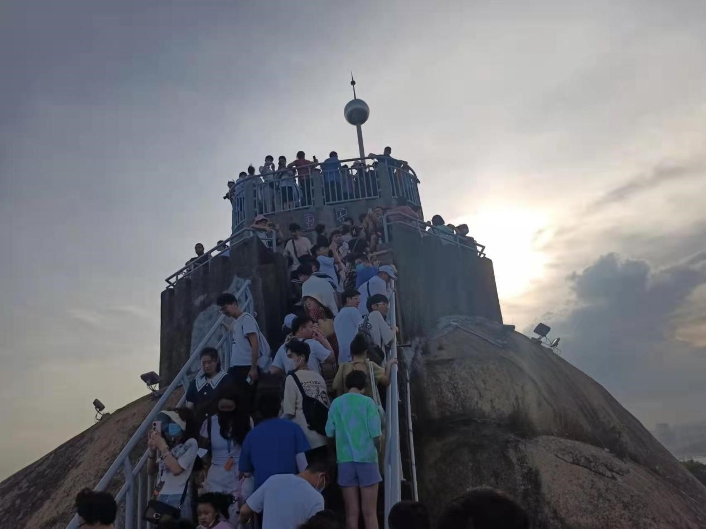
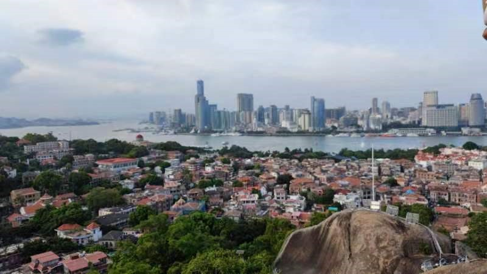

2022年7月18日下午1时许，SmartDSP实验室部分博士、硕士以及准研一的两位同学于厦大访客中心集合，一同前往轮渡码头，开展鼓浪屿团建活动。研二王同学主要负责联络各级同学，并策划此次团建活动。

活动伊始，SmartDSP的团建成员们在“王导”的带领下率先前往故宫鼓浪屿外国文物馆。故宫鼓浪屿外国文物馆由厦门市政府与故宫博物院合作建设，是故宫博物院在地方设立的第一个主题分馆，集中展示故宫博物院收藏的明清两代的外国文物。正中门内，是产自18世纪英国的铜镀金象驮转花钟，刻有印度风的雕花，美轮美奂。也有颇具典雅韵味的日本漆器金漆仙鹤纹亭，还有精美的西方织物泰西缎、泰西纱等。博物馆外烈日炎炎，王同学巧妙地将室内活动安排在一天中最热的时候，既规避了三伏天的暑气又让同学们增长了见闻。


随后，团建小队来到位于鼓浪屿岛南部，面向大海，背倚日光岩的菽庄花园。菽庄花园建于1913年，原是地方名绅林尔嘉的私人别墅，园主人以他的字“叔臧”的谐音命名花园，有白水洋水景风光，有火山岛之礁石，又有兔耳岭高山草甸之美。菽庄花园利用天然地形巧妙布局，全园分为藏海园和补山园两大部分，各景错落有序，园在海上，海在园中，既有江南庭院的精巧雅致，又有海鸥飞翔的雄浑壮观，动静对比，相得益彰。园内还有四十四桥和十二洞天等景点。辽阔的海域是它的亭台，隔海的南太武山脉是它的围墙。

SmartDSP一行人穿过落在海岸上弯弯曲曲的石桥，登上数级石阶，来到菽庄花园高处的白色建筑——钢琴博物馆。“钢琴博物馆”由听涛轩改建而成，展出由鼓浪屿旅澳收藏家胡友义先生毕生收藏的世界名古钢琴30台，其中有十九世纪上半叶美国制造的“士坦威”，奥地利的“博森多福”，德国皇室专用的皇家钢琴，稀世珍品镏金钢琴，世界最早的四角钢琴，最大的立式钢琴，最老的手摇钢琴，脚踏自动演奏钢琴，八个踏脚四套琴弦钢琴，表现了一百多年来世界钢琴的制作技术和发展水平，使鼓浪屿琴岛名符其实，增添光彩。


下午四时许，团建小队走出钢琴博物馆，虽然日光不再像正午时般热烈，但部分小队成员已经尽显疲态。王导策划的最后一处景点——日光岩，最终也只有王导和博士一同前往参观，其余同学则原地休息。日光岩原名”晃岩“。相传1641年，郑成功来到晃岩，看到这里的景色胜过日本的日光山，便把”晃“字拆开，称之为”日光岩“。日光岩为鼓浪屿最高峰，清晨的第一缕阳光总是最先投射在此。虽然时值炎炎夏日，但慕名而来的游客们还是络绎不绝地赶来，挤满了本就不太宽敞的攀岩阶梯。师兄一行人顺着人潮艰难前行，碍于顶峰观景台上人数太多，最终放弃登顶，转而在顶峰附近的另一个小平台上驻足观赏风景。虽然没有”会当凌绝顶“，但也足以”一览众山小“了。整个鼓浪屿的美景尽收眼底，还有上方不远处顶峰上攒动的人头。看着蓝天、白云、山下的绿树和红色的建筑物、远处的大海...，一阵清风吹来，吹散了炎热和一身的疲惫，不到长城非好汉之感油然而生。因为临近闭园，师兄一行人在平台上稍作休息便下山了，和其他同学汇合后大家一起去吃了晚饭。


行程仅短短半天，smart DSP的成员们却受益匪浅。博物馆典雅的文物与有趣的典故丰富了同学们的历史知识，加深了艺术修养。我们也在鼓浪屿蜿蜒的山路中锻炼了身体加强了体魄。清风徐徐，海波荡漾，在这样的美景中，smart DSP成员们的友谊更加深厚，也拉进了新一届的同学们和师兄师姐的距离。尽管成员们分属翔安、海韵两地，但大家都不约而同地期待下一次会面，努力建设一个更有爱的smart DSP大家庭。